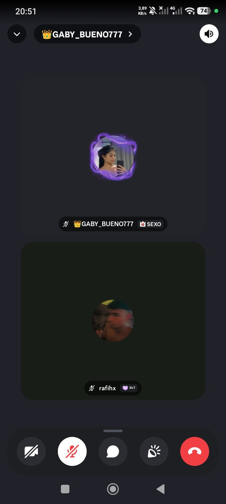

🎮📞❤️ Nossa história em momentos

🎮 Em jogo
Nossas partidas nunca foram só jogos. Eram momentos em que eu me sentia perto de você, mesmo estando longe. Cada risada, cada brincadeira, cada conversa e até cada derrota virou uma lembrança que eu guardo com carinho.

📞 Em ligação
Ouvir sua voz sempre foi uma das melhores partes do meu dia. Às vezes eram conversas longas, às vezes só presença, mas cada ligação me fazia sentir que você estava comigo de algum jeito.

❤️ Nós dois
A gente não é perfeito. Já tivemos erros, inseguranças, cansaço e dias difíceis. Mas mesmo assim existe sentimento, cuidado e vontade de continuar. Eu não quero que os problemas apaguem tudo que construímos.